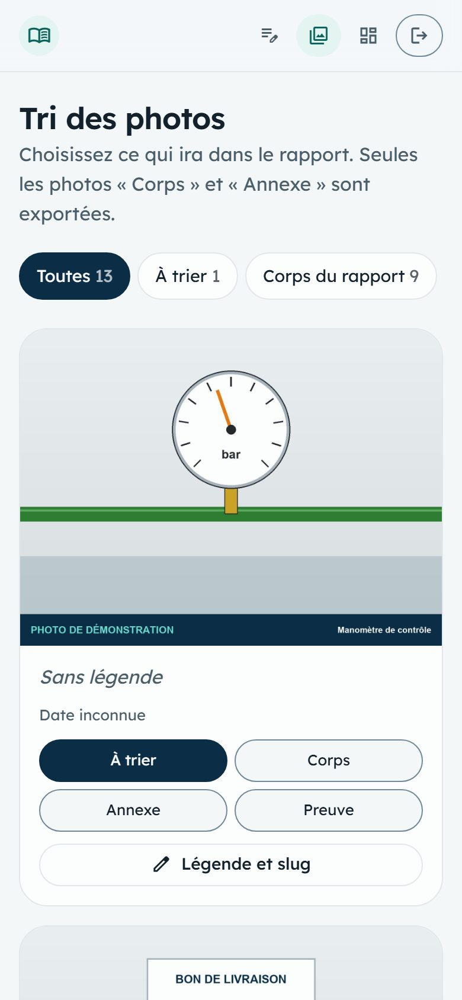
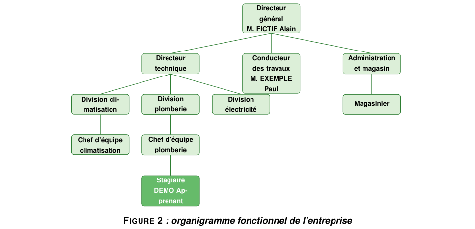
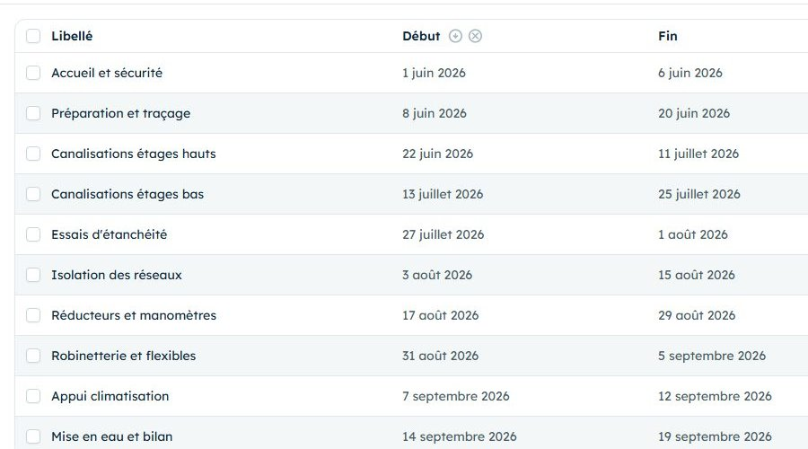
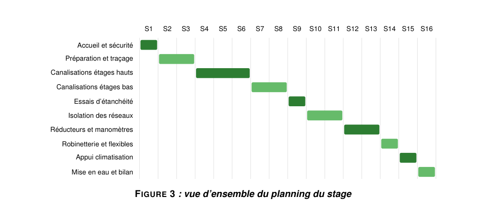

Samedi 12 décembre 2026
Vos photos, votre organigramme et vos tâches seront dessinés tels quels dans le rapport. Aujourd'hui, vous les faites valider et vous comblez les manques.

Le Carnet génère lui-même l'organigramme, le planning et les tableaux du rapport. Ce que vous y saisissez s'imprimera tel quel : une erreur ici devient une erreur de figure.
| Moment | Dans l'application | Durée |
|---|---|---|
| Vendredi soir | Relire l'organigramme et les tâches ; lister les chapitres sans photo. | 15 min |
| En arrivant | Montrer l'organigramme au tuteur, noter ses corrections. | 10 min |
| Dans la journée | Photos manquantes, avec accord. Une note rapide pour chacune. | 1 min par photo |
| Avant de partir | Demander où en sont les tâches : terminées, en cours, à venir. | 5 min |
| Le soir | Corriger l'organigramme, dater les tâches, trier et légender les photos. | 45 min |
Deux listes du Carnet deviennent des figures sans aucune retouche : relisez-les comme si elles étaient déjà imprimées.
Organigramme : un poste par ligne, avec son parent.

Tâches : chacune devient une barre du planning, semaine par semaine.

Trier les photos, puis le journal filtré par rubrique : quels chapitres du thème n'ont encore aucune photo ? Écrivez-les ici, avec la photo qui les illustrerait.
Quota : chaque photo occupe de la place sur le compte (80 Mo par stage). Supprimez les photos ratées plutôt que de les garder « au cas où ».
Reporter les corrections du tuteur : poste, parent, nom (seulement s'il est publiable).
Date de fin pour chaque tâche terminée, nouvelles tâches pour la suite du stage.
Corps : la photo illustre le texte, 25 au plus. Annexe : utile mais secondaire ; chaque annexe sera annoncée dans le texte. Preuve : gardée pour vous, jamais exportée.
Une légende dit ce qu'on voit et où : elle deviendra « Figure N : … ». Le slug reste court et unique.

Puis ouvrez terrain.md : la section « Photos retenues » liste ce qui ira dans le rapport.
Cinq exercices en lecture seule : comparez le compte de démonstration avec son rapport (lien sur l'accueil du Carnet).
esrventisax.pythonanywhere.comdemo.apprenantdemo-local-2026À faire : compter les tâches dans Tâches, puis les barres du planning (figure 3 du rapport).
Résultat attendu : dix tâches, dix barres, sur seize semaines, dans le même ordre.
À faire : dans Organigramme, trouver le poste coché Poste du stagiaire et son parent ; le retrouver sur la figure 2.
Résultat attendu : « Stagiaire », sous le chef d'équipe plomberie, en vert foncé sur la figure.
À faire : Trier les photos, lire les compteurs de chaque filtre.
Résultat attendu : 9 photos dans le corps, 2 en annexe, 1 preuve (le bon de livraison), qui ne sera pas exportée.
À faire : ouvrir la photo « Manomètre de contrôle » avec Légende et slug, puis la chercher dans le rapport.
Résultat attendu : elle y figure parmi les photos du matériel (figure 7). La rédaction peut raccourcir la légende, jamais en changer le sens.
À faire : sur le tableau de bord, lire la case Photos corps / annexe.
Résultat attendu : 9 / 2, sans orange. Au-delà de 25 photos dans le corps, la case passerait en orange.
Dans le rapport, la légende est souvent la seule phrase que le jury lit sous une photo. Elle doit suffire à comprendre l'image.
« Photo 3 », « IMG_2041 », « Chantier »
« Réducteur de pression monté entre deux vannes, gaine technique du R+2 »
Pour chaque photo, cochez la destination qui convient.
| Photo | Corps | Annexe | Preuve |
|---|---|---|---|
| Le compresseur que décrit votre chapitre sur les matériels. | |||
| La fiche de réception signée par le client. | |||
| Le schéma complet de l'installation, trop détaillé pour le texte. | |||
| La quatrième vue presque identique du même raccord. | |||
| Le geste de brasure que décrit votre mode opératoire. |
Réponses : corps ; preuve (document interne, gardé pour vous) ; annexe, annoncée dans le texte ; aucune : supprimez-la ; corps.